Promoviendo la cultura y las artes en el territorio lacustre andino
Bienvenidos a la Corporación Cultural Antulelbún
Somos una ONG sin fines de lucro fundada en 2023 por la profesora normalista y poeta Norka Sepúlveda, dedicada al fomento y desarrollo de la cultura y las artes.
Actividades Recientes
ONG Antulelbún prepara en Pucón:
Encuentro Latinoamericano “Mistral: legado, vigencia y proyección a 80 años del Nobel”
En el mes de octubre 2025, la comuna de Pucón será escenario del Encuentro Latinoamericano “Mistral: legado, vigencia y proyección a 80 años del Nobel”, una iniciativa impulsada por la ONG Antulelbún en el marco de las celebraciones por los 80 años de la entrega del Premio Nobel a Gabriela Mistral.
Este encuentro busca abrir un espacio de diálogo crítico y reflexivo sobre la obra de Mistral, su impacto en América Latina y su proyección hacia el futuro. A través de paneles, lecturas poéticas y actividades territoriales, se abordarán las múltiples dimensiones de su legado: desde su rol político y pedagógico hasta su escritura íntima y disidente.
El evento contará con la participación de reconocidas figuras del ámbito cultural y político latinoamericano, entre ellas: Omar Baliño Cedré, director de la Biblioteca Nacional de Cuba, José Raúl Belén Acosta, director del programa Epigrama de Radio Progreso y Gestor Cultural, Dra. Eugenia Toledo Reinner, escritora y académica chilena radicada en Estados Unidos y Etherline Mikeska, escritora argentina.
Todos ellos compartirán sus miradas sobre la vigencia de Mistral en el contexto latinoamericano contemporáneo.
El encuentro incluirá tres paneles de conversación que invitan a repensar a Gabriela Mistral desde perspectivas actuales y urgentes:
Gabriela Mistral y el Sur político: escritura, diplomacia y resistencia
Reflexión sobre su rol como intelectual crítica del imperialismo, defensora de los pueblos originarios y promotora de una América Latina soberana.
Mistral pedagoga: educación como herramienta de emancipación territorial
Análisis de su pensamiento educativo como propuesta transformadora para contextos rurales, indígenas y empobrecidos.
Gabriela Mistral y la disidencia afectiva: maternidades, vínculos y silencios
Exploración de sus modelos alternativos de afectividad y familia, desde su escritura íntima y sus vínculos personales.
Además de los paneles, el encuentro incluirá:
• Ceremonia inaugural con autoridades locales y representantes culturales.
• Lecturas poéticas “Nuevas voces mistralianas”, protagonizadas por jóvenes poetas inspiradas en la obra de Mistral.
• Visitas a comunidades mapuche, para el intercambio de saberes y la valorización de la riqueza ancestral del territorio.
Imagen: Colección del legado Gabriela Mistral del Archivo del Escritor-Biblioteca Nacional de Chile.
Antulelbún desarrolla exitosa jornada de arte participativo en población Arrayanes Libertad
El pasado sábado 28 de junio, la Corporación Cultural Antulelbún llevó a cabo una nueva jornada de su programa Arte en Comunidad en la población Arrayanes Libertad de la comuna de Pucón, generando un espacio creativo, participativo y lleno de encuentros significativos. Vecinos y vecinas de distintas edades se sumaron a esta experiencia, que combinó arte, memoria e identidad a través de tres talleres diseñados para fomentar la expresión personal y colectiva.
La jornada incluyó el taller “Autorretrato con títeres de dedos: explorando nuestra identidad a través del arte textil”, en el que las y los participantes confeccionaron títeres de dedo utilizando fieltro, hilo y aguja, inspirándose en sus propias características identitarias. Esta actividad permitió un acercamiento lúdico y reflexivo a la construcción del “yo” desde el territorio y la diversidad.
También se desarrolló el taller “Arte Postal”, donde las personas asistentes aprendieron a crear estampillas artesanales mediante la técnica de cianotipia, un antiguo proceso fotográfico que mezcla arte, ciencia y memoria visual. Esta propuesta puso en valor la experimentación artística con elementos cotidianos y accesibles.
Finalmente, el taller “Microfanzines: Historias en Miniatura” invitó a imaginar, escribir y diseñar pequeñas publicaciones autoeditadas —los fanzines— que recopilan relatos e imágenes personales o comunitarios. Esta actividad fortaleció el ejercicio narrativo desde la autonomía y la imaginación.
La jornada fue valorada como una instancia significativa de encuentro vecinal y creación colaborativa, reafirmando el compromiso de Antulelbún con la democratización del arte y la cultura como herramienta de transformación y cohesión social.
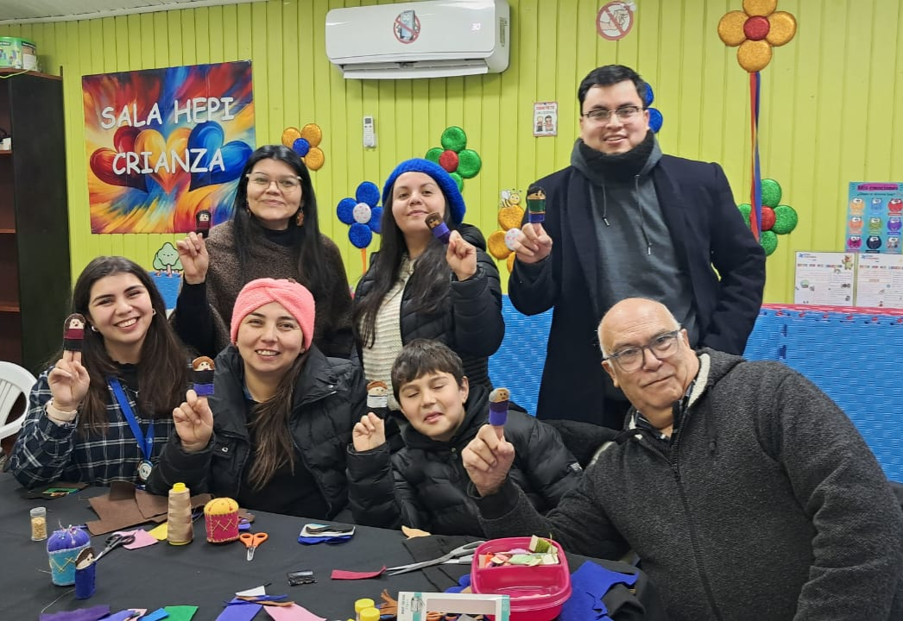
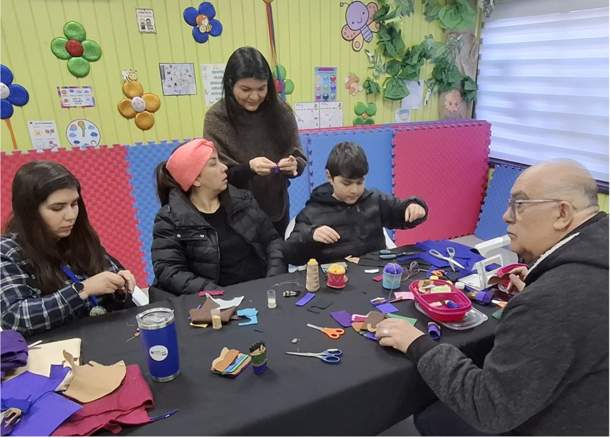
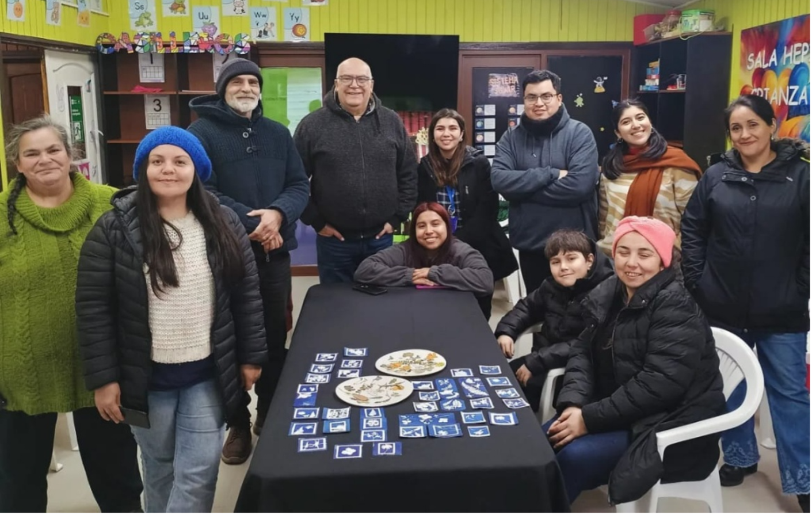
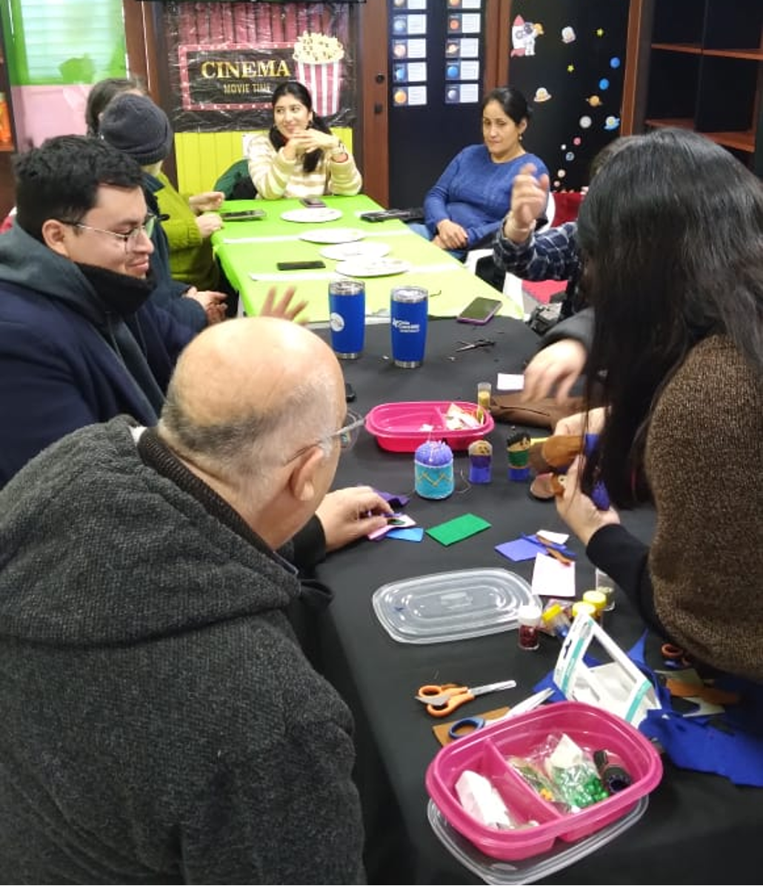
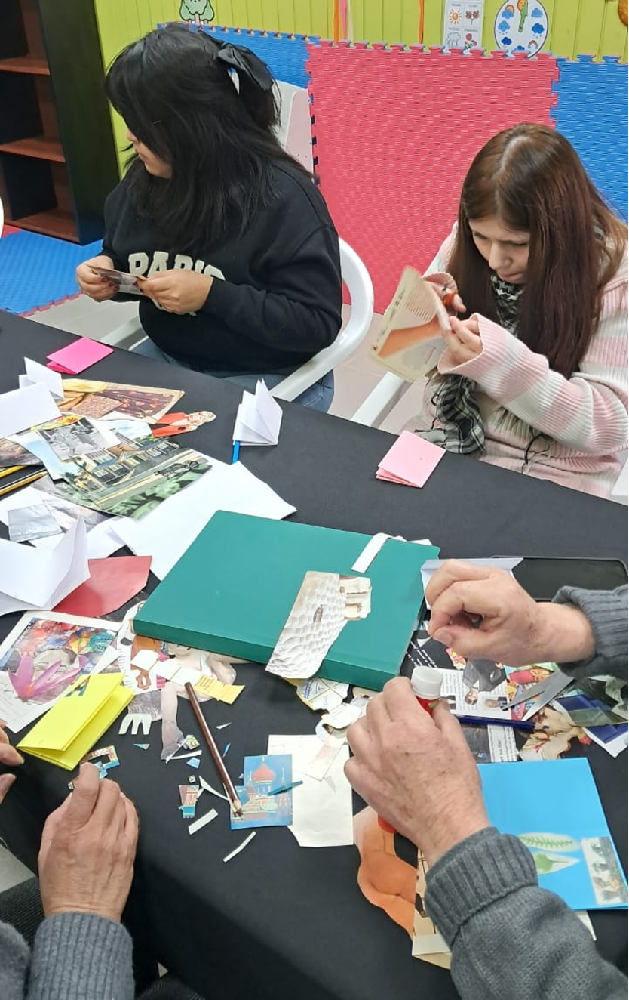
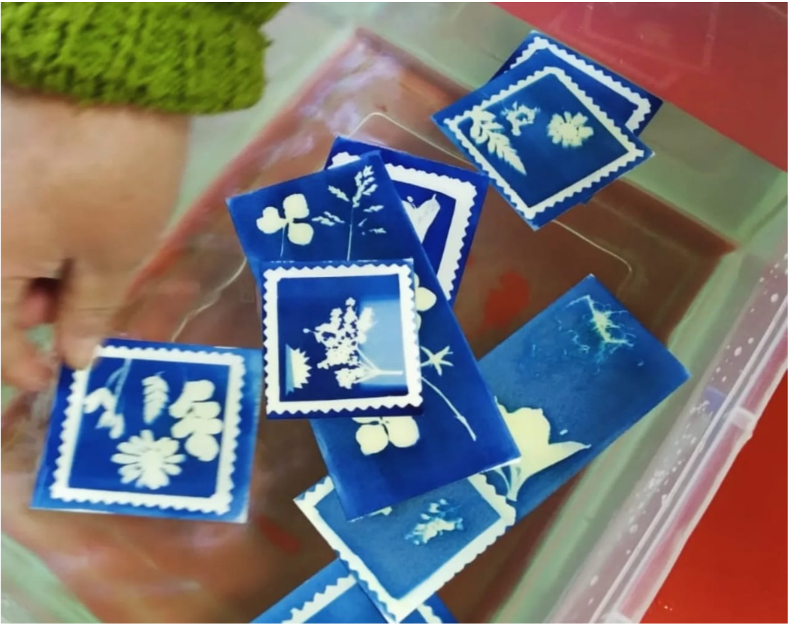
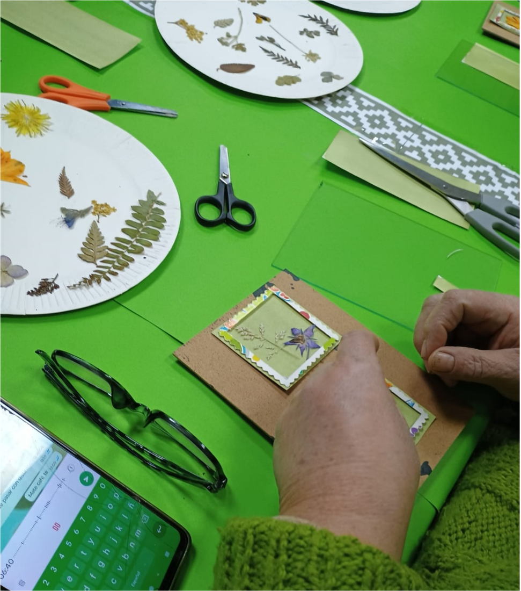
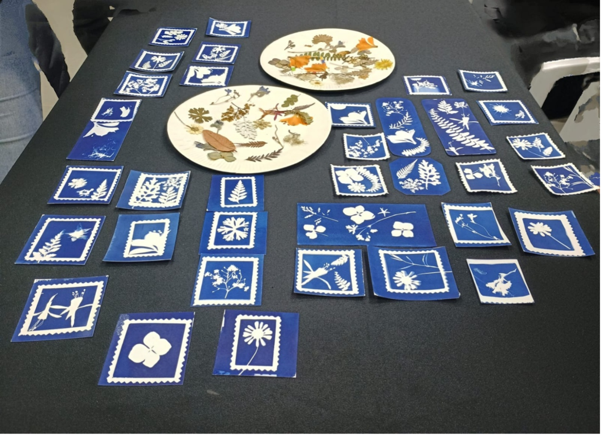
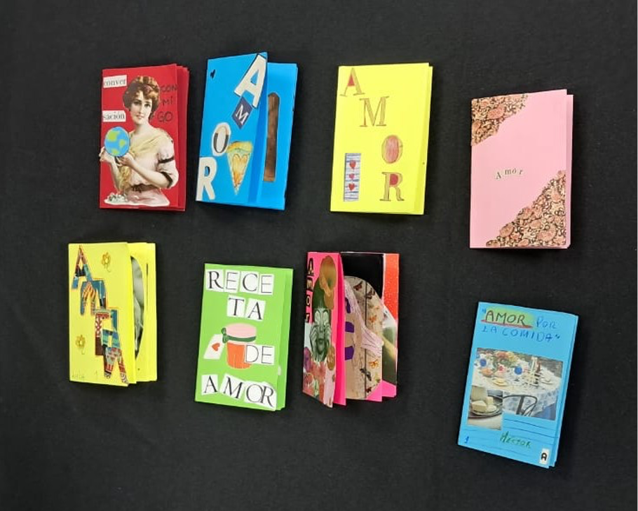
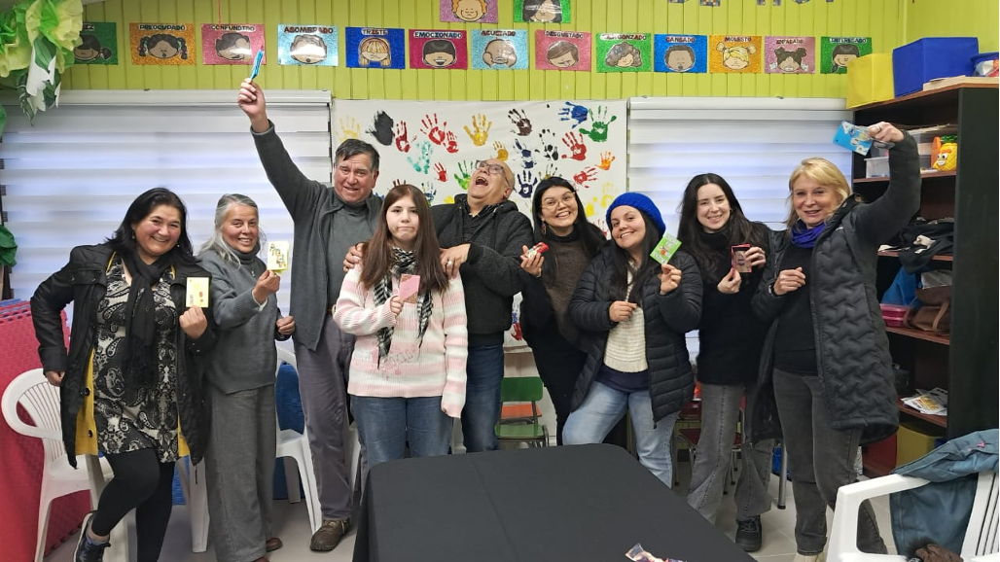
Antulelbún representa a Chile en el Encuentro Internacional de Colectivos Culturales ECOS 2025 en México
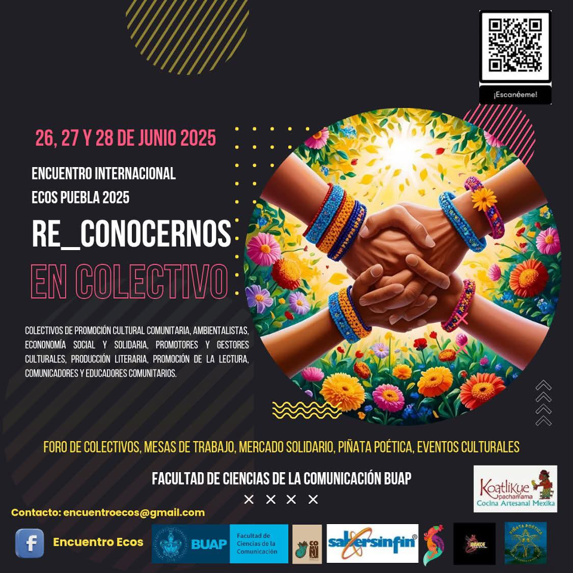
La Corporación Cultural Antulelbún participó activamente en el Encuentro Internacional de Colectivos Culturales ECOS 2025, inaugurado el pasado jueves en el Aula Magna de la Facultad de Ciencias de la Comunicación (FCC) de la Benemérita Universidad Autónoma de Puebla (BUAP), México. El evento, que este año se desarrolla bajo el lema “Re-conocernos en colectivo”, reunió a destacadas organizaciones de la sociedad civil, gestores culturales y actores del ámbito comunitario de América Latina.
La ceremonia de apertura contó con la presencia de la directora de la FCC, doctora Angélica Mendieta Ramírez, quien dio la bienvenida a las y los participantes, marcando el inicio de una instancia dedicada al intercambio de saberes, experiencias y estrategias para fortalecer redes culturales desde un enfoque territorial, solidario e interdisciplinario.
Durante la primera jornada se llevaron a cabo diversas exposiciones a cargo de referentes como Cecilia Adriana Díaz Smith, Rubén Zeleny, Jesús “Capi” Esparza, Marissa Alaffita, Abel Pérez Rojas y Majo Alanís, entre otras personas invitadas. Los diálogos se centraron en el papel transformador de los colectivos culturales frente a los desafíos sociales y ambientales actuales.
La segunda jornada ofreció un espacio de vinculación virtual con activistas de Chile y Argentina. En representación chilena, la ONG Antulelbún —presidida por Carlos Gray Aguirre— compartió un panorama general sobre la trayectoria de las organizaciones comunitarias en el país y presentó su experiencia como organización cultural no gubernamental. La exposición abordó los desafíos contemporáneos que enfrenta el sector y el valor de construir redes colaborativas para el fortalecimiento del patrimonio vivo y la participación ciudadana en los territorios.
La participación de Antulelbún en ECOS 2025 reafirma su compromiso con la articulación latinoamericana y con el desarrollo de iniciativas culturales sostenibles que promuevan la equidad, la identidad y el derecho a la cultura.
Exitosa ruta patrimonial teatralizada en Pucón cautiva a la comunidad
La Ruta Patrimonial Teatralizada "Un paseo por la memoria de Pucón" se desarrolló con gran éxito el pasado domingo 25 de mayo, adaptándose a las inclemencias climáticas en un formato indoor en el Campus Pucón de la Universidad de La Frontera. Cerca de 100 asistentes disfrutaron de una experiencia inmersiva que, a través de personajes históricos ficticios, permitió revivir momentos clave de la historia local contenida en Los Archivos de la Memoria: La Historia No Contada de Pucón, obra de Carlos Gray A.
El evento, organizado por la Corporación Cultural Antulelbún con colaboración de la Municipalidad de Pucón y la Universidad de La Frontera, Campus Pucón, sorprendió y fascinó al público, que elogió la puesta en escena y la adaptación del recorrido a un espacio cerrado. Actores con vestuario teatral y elementos audiovisuales transformaron la jornada en un relato vivo y dinámico, fortaleciendo el vínculo de la comunidad con su identidad cultural.
Esta actividad formó parte del catálogo de actividades de celebración del Día de los Patrimonios 2025, a nivel nacional, del Ministerio de las Culturas, las Artes y el Patrimonio.
La exitosa realización de esta iniciativa demuestra el compromiso de Pucón con la promoción y preservación de su patrimonio, consolidando a la ONG Corporación Cultural Antulelbún como un agente cultural líder de una experiencia innovadora que acerca a las personas a su historia de manera creativa y participativa.
Revisa las imágenes del evento acá:
Fotografías: Salvador Bravo Melin.
Pucón se prepara para una inmersiva Ruta Turística Teatralizada en el Día del Patrimonio 2025
En un esfuerzo por rescatar y difundir la historia local, la Corporación Cultural Antulelbún, en colaboración con la Municipalidad de Pucón y la Universidad de La Frontera, Campus Pucón, está organizando una experiencia inédita para el Día del Patrimonio 2025: una Ruta Turística Teatralizada titulada "Un paseo por la memoria de Pucón".
El evento, previsto para domingo 25 de mayo a las 11:00 horas, ofrecerá un recorrido guiado por nueve puntos emblemáticos de la ciudad, con actuaciones que darán vida a simpáticos personajes de inicios de la fundación de la comuna para relatar pasajes contenidos en Los Archivos de la Memoria: La Historia No Contada de Pucón, obra de Carlos Gray A.
Esta iniciativa no solo busca acercar la comunidad y visitantes al pasado de Pucón, sino que también promueve el acceso gratuito al conocimiento histórico y la participación activa en la conservación de la identidad cultural. Para ello, el evento contará con herramientas digitales como un código QR que permitirá acceder a un mapa interactivo con fotografías antiguas de los lugares visitados.
El equipo de producción está conformado por tres actores y una profesional encargada del material digital, quienes, con vestuarios teatrales y elementos auditivos como megáfonos, transformarán cada parada en un episodio inmersivo de la historia local. Se espera que esta celebración del patrimonio logre consolidarse como un hito cultural que refuerce el vínculo entre la ciudad y su historia, permitiendo a los asistentes vivir el pasado a través de una experiencia innovadora y memorable. ¡Pucón se prepara para recorrer su memoria como nunca antes!
Convocatoria abierta para el Mapeo Cultural de Pucón y Curarrehue
La Corporación Cultural Antulelbún invita a todos los agentes culturales de Pucón y Curarrehue a participar en el proceso de mapeo cultural, una iniciativa diseñada para conectar a quienes comparten una identidad territorial y fortalecer espacios de vínculo en el futuro.
Este registro busca identificar y visibilizar a artistas, gestores y emprendimientos culturales de ambas comunas, con el propósito de generar redes colaborativas que impulsen el desarrollo del sector. La información recopilada permitirá estructurar futuras instancias de intercambio, capacitación y comercialización, alineadas con estrategias municipales y regionales.
La inscripción es gratuita y abierta a todas las personas vinculadas a la creación y gestión cultural en Pucón y Curarrehue. Para participar, los interesados deben completar el formulario disponible en las plataformas digitales de la Corporación Antulelbún o contactar a la coordinación del proyecto. Este mapeo representa un paso fundamental para el fortalecimiento del ecosistema cultural local, facilitando la articulación entre actores del territorio y asegurando la sustentabilidad del sector. ¡Seamos parte de esta iniciativa y consolidemos juntos el futuro cultural de la Araucanía Lacustre Andina!